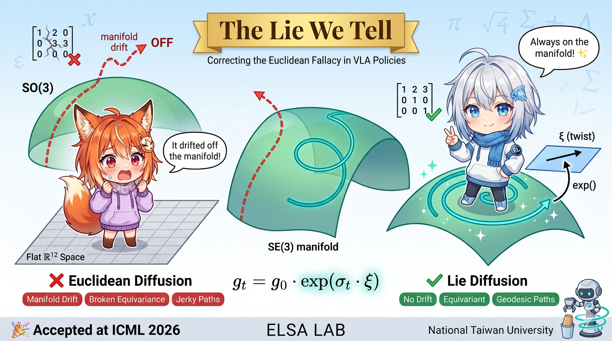
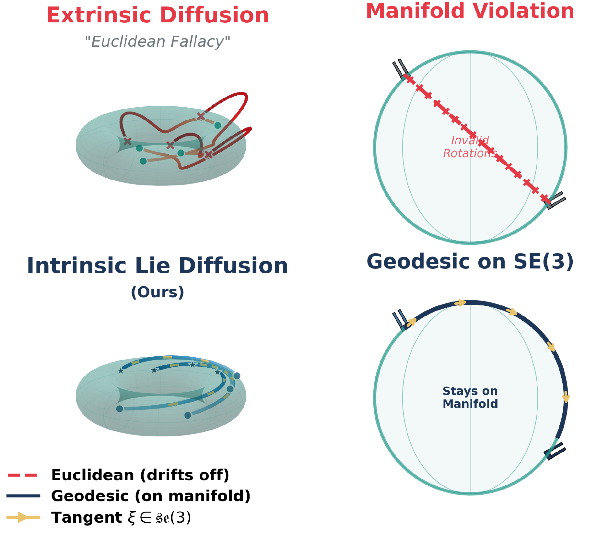
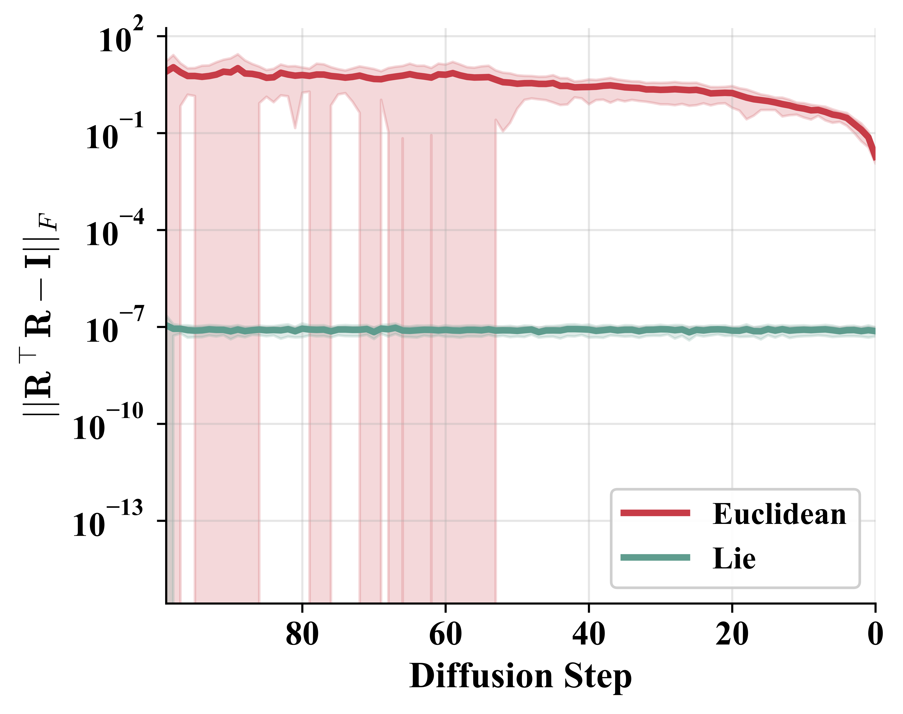

<!DOCTYPE html>
<html lang="en">
<head>
  <meta charset="UTF-8" />
  <meta name="viewport" content="width=device-width, initial-scale=1.0" />
  <title>The Lie We Tell — ICML 2026</title>
  <meta name="description" content="Lie Diffuser Actor — Correcting the Euclidean Fallacy in Vision-Language-Action Policies via Score Matching on Tangent Space. ICML 2026." />
  <link rel="stylesheet" href="static/colors_and_type.css" />
  <link rel="stylesheet" href="static/site.css" />
  <script src="https://unpkg.com/lucide@latest"></script>
  <script src="https://unpkg.com/react@18.3.1/umd/react.development.js" crossorigin="anonymous"></script>
  <script src="https://unpkg.com/react-dom@18.3.1/umd/react-dom.development.js" crossorigin="anonymous"></script>
  <script src="https://unpkg.com/@babel/standalone@7.29.0/babel.min.js" crossorigin="anonymous"></script>
</head>
<body>
  <div id="root"></div>

  <script type="text/babel" src="static/Nav.jsx"></script>
  <script type="text/babel" src="static/Hero.jsx?v=2"></script>
  <script type="text/babel" src="static/Section.jsx"></script>
  <script type="text/babel" src="static/Figure.jsx"></script>
  <script type="text/babel" src="static/Video.jsx?v=2"></script>
  <script type="text/babel" src="static/ResultsTable.jsx?v=2"></script>
  <script type="text/babel" src="static/RobotGrid.jsx?v=3"></script>
  <script type="text/babel" src="static/BibTeX.jsx"></script>
  <script type="text/babel" src="static/Footer.jsx"></script>

  <script type="text/babel" data-presets="react">
    function App() {
      React.useEffect(() => { lucide.createIcons(); });

      return (
        <>
          <Nav />
          <main className="lda-page">
            <Hero />

            {/* Abstract */}
            <Section id="abstract" eyebrow="§1 · Abstract" title="Diffusion-based VLA policies commit a fundamental geometric error.">
              <p className="lead">
                Diffusion-based Vision-Language-Action policies achieve remarkable success in robotic manipulation, yet commit a fundamental geometric error we term the <em>Euclidean Fallacy</em>: representing <span className="glyph">SE(3)</span> poses as flat <span className="glyph">ℝ¹²</span> vectors.
              </p>
              <p>
                This approximation induces (1) <strong>manifold drift</strong> violating <span className="glyph">SO(3)</span> constraints, (2) <strong>broken equivariance</strong> under coordinate transformations, and (3) <strong>non-geodesic trajectories</strong> with excessive kinematic cost.
              </p>
              <p>
                We introduce <strong>Lie Diffuser Actor (LDA)</strong>, a diffusion framework operating intrinsically on <span className="glyph">SE(3)</span>. Our method injects noise through left-invariant SDEs, predicts scores in the tangent space, and retracts samples via the exponential map. This formulation eliminates manifold drift by construction while guaranteeing coordinate-frame equivariance and geodesic optimality. On CALVIN ABC→D, LDA improves average task length from 3.27 to 3.51 (+7.3%). We further validate the method on a real robot, where it outperforms the baseline on the majority of tasks.
              </p>
            </Section>

            {/* Overview cover */}
            <Section eyebrow="Overview" title="One minute overview.">
              
            </Section>

            {/* Method */}
            <Section id="method" eyebrow="§4 · Method" title="Diffuse on the manifold, not its embedding.">
              <p>
                Standard diffusion defines forward noising as <span className="glyph">x<sub>t</sub> = x<sub>0</sub> + σ<sub>t</sub> ε</span>, with <span className="glyph">ε ∼ 𝒩(0, I)</span>. This is invalid on <span className="glyph">SE(3)</span>: vector addition is undefined on a curved manifold. We instead define the forward process as a left-invariant SDE on the Lie group, perturbing poses multiplicatively through the exponential map: <span className="glyph">g<sub>t</sub> = g<sub>0</sub> · exp(σ<sub>t</sub> ω)</span>, where <span className="glyph">ω ∼ 𝒩(0, I<sub>6</sub>) ∈ se(3)</span>.
              </p>

              <Figure num="1" caption="Euclidean Diffusion vs. Lie Diffusion. (Top) Extrinsic diffusion treats the curved SE(3) manifold as flat ℝⁿ, which causes drift and produces invalid geometries. (Bottom) The proposed Lie Diffuser Actor injects noise as tangent twists ξ ∈ se(3), ensuring that trajectories follow valid geodesics." bare>
                
              </Figure>

              <ul className="lda-bullets">
                <li>
                  <span className="num">Proposition 4.1</span>
                  <h4>No manifold drift.</h4>
                  <p>The exponential map guarantees <span className="glyph">exp(ω) ∈ SE(3)</span> for any twist <span className="glyph">ω ∈ se(3)</span> — the network never sees invalid rotations.</p>
                </li>
                <li>
                  <span className="num">Theorem 4.2</span>
                  <h4>Coordinate equivariance.</h4>
                  <p>Left-invariance gives <span className="glyph">s<sub>θ</sub>(h · g, t) = Ad<sub>h</sub>(s<sub>θ</sub>(g, t))</span> — the score function transforms covariantly under rigid transformations of the workspace, so it stays intrinsic to the manipulation task rather than becoming coordinate-frame dependent.</p>
                </li>
                <li>
                  <span className="num">Proposition 4.3</span>
                  <h4>Geodesic trajectories.</h4>
                  <p>The probability-flow ODE produces screw motions with constant angular and linear velocities — the kinematically natural paths.</p>
                </li>
              </ul>

              <h3 style={{marginTop: 'var(--s-8)', marginBottom: 'var(--s-4)'}}>Architecture</h3>
              <p>
                We extend 3D Diffuser Actor with a Graph Attention encoder and a tangent-space prediction head. The denoiser predicts twist vectors <span className="glyph">ω<sub>h</sub> = (ω, v) ∈ ℝ⁶</span> per waypoint; updates are applied on the manifold.
              </p>
              <Figure num="3" caption="Architecture overview. Multi-view RGB-D is back-projected into a unified point cloud and fused with CLIP language features. The denoiser predicts scores in se(3); waypoints are retracted via exp(·)." bare>
                
                <div className="lda-arch">
                  <div className="lda-arch-block">
                    <div className="label">Encoder</div>
                    <div className="name">Geometric Context</div>
                    <div className="desc">Multi-view RGB-D → point cloud → GAT features. CLIP text encodes the instruction.</div>
                    <div className="glyph-out">F<sub>geo</sub>, F<sub>lang</sub></div>
                  </div>
                  <div className="lda-arch-block">
                    <div className="label">Backbone</div>
                    <div className="name">Iterative Denoising Transformer</div>
                    <div className="desc">Self-attention across H waypoints; cross-attention into the geometric–linguistic context.</div>
                    <div className="glyph-out">g<sub>t</sub> ∈ SE(3)<sup>H</sup></div>
                  </div>
                  <div className="lda-arch-block tangent">
                    <div className="label">Head · Ours</div>
                    <div className="name">Tangent Space Prediction</div>
                    <div className="desc">Predicts twists ω<sub>h</sub> = (ω, v) ∈ ℝ⁶. The exponential map retracts updates to the manifold.</div>
                    <div className="glyph-out">ω<sub>h</sub> ∈ se(3)</div>
                  </div>
                  <div className="lda-arch-block">
                    <div className="label">Output</div>
                    <div className="name">Trajectory + Gripper</div>
                    <div className="desc">Per-waypoint pose + binary gripper state, executed in sequence.</div>
                    <div className="glyph-out">(g<sub>1</sub>, …, g<sub>H</sub>, σ)</div>
                  </div>
                </div>
              </Figure>
            </Section>

            {/* Results */}
            <Section id="results" eyebrow="§5 · Results" title="Long-horizon CALVIN.">
              <p>
                On the zero-shot ABC→D protocol, intrinsic Lie diffusion and the geometry-aware GAT encoder are <em>independently</em> effective. The full Lie Diffuser Actor — both modifications combined — outperforms the baseline across all five sub-tasks.
              </p>
              <ResultsTable />

              <Figure num="5b" caption={<>Orthogonality violation ‖R<sup>⊤</sup>R − I‖<sub>F</sub> across reverse-diffusion steps. Euclidean diffusion drifts off the manifold; Lie diffusion stays at floating-point precision throughout.</>} bare>
                
              </Figure>
            </Section>

            {/* Real Robot */}
            <Section id="realrobot" eyebrow="§5.3 · Real Robot" title="Deployed on a real arm.">
              <p>
                Across four manipulation tasks spanning coarse transport to fine assembly, LDA delivers superior performance where geometric fidelity matters most: perfect success on Move Doll Platform, and substantial gains on Sort Blocks and Stack Cups, where precise orientation control is critical.
              </p>
              <RobotGrid />
            </Section>

            {/* BibTeX */}
            <Section id="bibtex" eyebrow="Cite" title="BibTeX.">
              <BibTeX />
            </Section>

            <Footer />
          </main>
        </>
      );
    }

    const root = ReactDOM.createRoot(document.getElementById('root'));
    root.render(<App />);
  </script>
</body>
</html>
